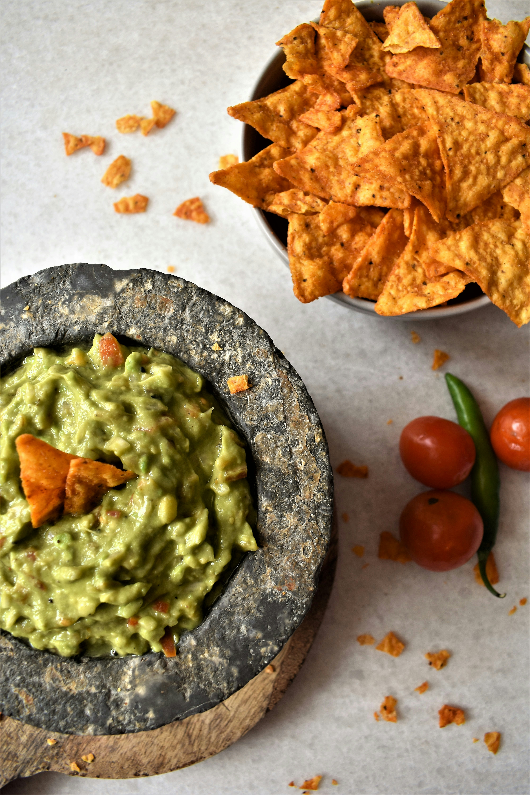

Home
Traditional Mexican Guacamole

Description
This authentic homemade guacamole is the ultimate crowd-pleaser! Creamy, rich, and packed with fresh flavor, it hits the perfect balance of ripe avocados, zesty lime, and crisp cilantro.
Whether you like it with a fiery jalapeño kick or prefer to keep it completely mild, this versatile dip is a total showstopper for game nights, taco Tuesdays, or your next backyard barbecue.
Ingredients
- 2 avocados, peeled and pitted
- 1 cup chopped tomatoes
- ¼ cup chopped onion
- ¼ cup chopped cilantro
- 2 tablespoons lemon juice
- 1 jalapeño pepper, seeded and minced (Optional)
- Salt and ground black pepper to taste
Steps
- Mash avocados in a bowl until creamy.
- Mix in tomatoes, onion, cilantro, lemon juice, and jalapeño pepper.
- Stir well until the mixture is fully combined.
- Season with salt and pepper to taste.